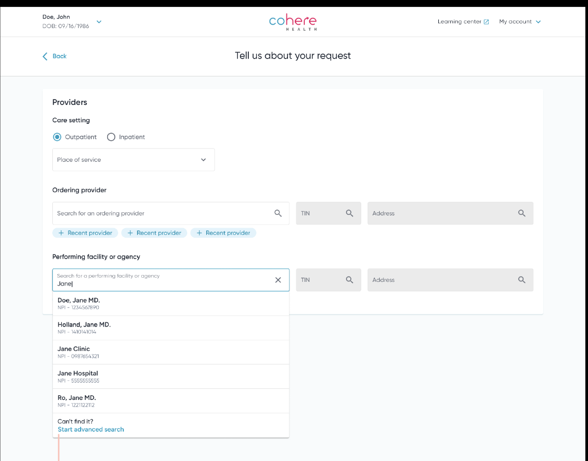
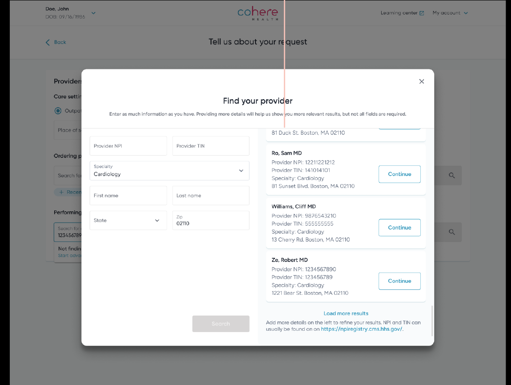
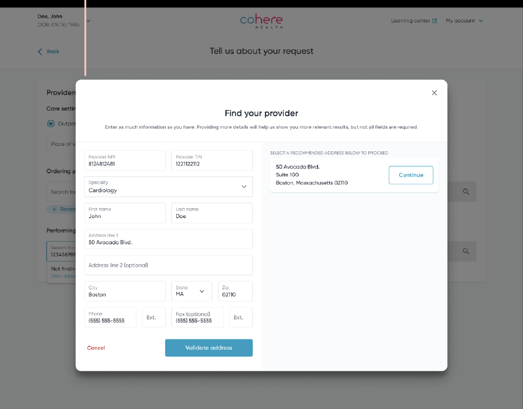

Designing a flexible provider search that helps auth submitters find the right provider or facility faster
Overview
I’m designing a flexible provider search experience that helps auth submitters find the right provider or facility faster, replacing a dead end that was quietly costing Cohere Health money every time it was hit. This project is in active development as of this writing, so the numbers below are directional, not final launch results.
The problem
When submitters create a prior authorization, they need to attach the right provider or facility record. Two things kept getting in the way. First, submitters don’t always have a provider’s NPI or TIN on hand, since doctors’ orders don’t always include it, so anyone without that number hit a wall. Second, when a search by NPI or TIN failed, the only fallback was creating a brand new manual provider record. Manual records can’t be run through our network checks, which means those auths get pended for review, and every pend adds operational cost.
So the same gap was hitting people twice: submitters without the right number couldn’t search effectively, and the fallback we gave them was the exact behavior that was driving up review volume downstream.
Solution
Instead of routing straight to manual record creation the moment a lookup failed, I added a real search step in between: an advanced search that lets submitters search by any combination of what they actually have, name, specialty, location, state, zip, not just NPI or TIN.

The search itself is deliberately loose. A submitter can fill in as little or as much as they know, specialty and zip code alone is enough to return a working result set, and the modal returns 20 results at a time with a “load more” option so a wide search doesn’t feel like a dead end either.

Manual record creation is still there as a last resort, since some providers genuinely won’t exist in our system yet, but now it only shows up after a real search has failed, and the form itself validates the address before letting the submitter proceed. That validation step is a small thing, but it’s the difference between a manual record that’s actually usable downstream and one that just creates more review work later.

Prototype
A clickable prototype of provider entry, driven by place of service. Use “Dev: switch state” in the corner to move between the Standard, WISeR, and AHP designs and their place of service rules.
Early feedback
In early testing, all 3 current Cohere users said this would reduce how often they needed to manually create a provider. It also confirmed something I’d suspected going in: search behavior varies a lot by office. Some submitters know exactly who they’re looking for and want a fast, exact lookup. Others are starting from partial information and need to browse. Building one flexible search instead of optimizing for a single “correct” workflow meant it could support both without forcing either group through the other’s process.
Status
Development is underway, with a target launch by the end of Q3. Visual QA is in progress now. I’ll update this case study with real usage data once it’s live.